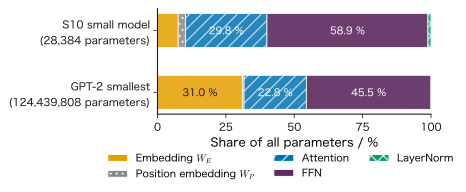
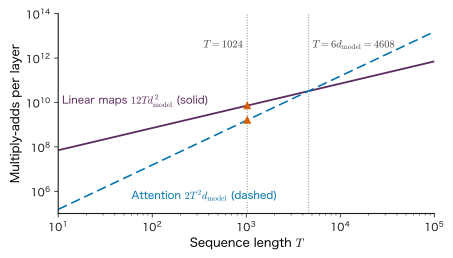

Chapter 25The Structure of the Transformer — Stacking Attention
- Attention is an operation that takes a “weighted average” just once. How, with that alone, can we build a model that captures the meaning of a sentence and outputs the probability of the next token?
- When the six tokens of “kinzoku no rei ni wa” (Japanese for “as for the example of a metal,” written as space-separated words) are fed in, how many rows and columns does each matrix flowing through the model have, and where, and how many, are the parameters?
- Attention returns the same answer even if the input is permuted (permutation equivariance). Why, then, can the Transformer distinguish word order?
The attention of the previous chapter was a mechanism by which each position of a sequence computes “how much information to take in from which positions.” But applying attention just once does little. All it does is take a weighted average of the values; it has no nonlinear transformation and no information about word order. The Transformer combines this attention with positional information, a small position-wise neural network (the FFN), residual connections, and LayerNorm to form a “block,” and stacks many blocks of the same shape. Every block receives a $T\times d_{\mathrm{model}}$ matrix and returns a matrix of the same shape, so the blocks can be stacked as many times as we like.
For example, the small model trained for this material (Simulator S10, part ②) has a vocabulary of 67 words, two blocks, and a vector dimension of 32, and it has 28,384 parameters. Counting in the same way for the smallest public GPT-2 model gives 124,439,808. They differ by four orders of magnitude, but the parts and the wiring are the same. In this chapter we build up, in order, the big picture (the encoder–decoder of the original paper), token embeddings and positional information, the Transformer block (post-LN and pre-LN), the position-wise FFN, residual connections and LayerNorm, the different roles of the encoder and the decoder, the flow of a GPT-type model (decoder only), how to count matrix shapes and parameters, and the computational cost.
- You can explain, with figures and equations, the roles of the parts of a Transformer block (self-attention, FFN, residual connections, LayerNorm) and the difference between post-LN and pre-LN.
- You can compute the sinusoidal positional encoding by hand, and derive that the encoding of a shifted position is expressed by a rotation and that the dot product is determined by the difference of positions alone.
- You can compute LayerNorm by hand on a small vector and explain the difference from batch normalization (over which axis the mean is taken).
- You can explain why a residual connection serves as a path for the gradient, from the form $\bm{I}+\partial F/\partial\bm{x}$ of the Jacobi matrix.
- For a GPT-type model, you can tabulate the shapes of all the matrices and the numbers of parameters from the token ID to the probability of the next token, and you can count the parameters of the smallest GPT-2 model yourself.
- You can show that the computational cost splits into a part proportional to the first power of $T$ and a part proportional to its second power, and explain the limit of the context length.
Sections for the introductory route: 25.1, 25.2, 25.3, 25.4, 25.5, 25.7, 25.8, 25.12. Sections marked “Detailed Route” may be skipped on a first reading.
25.1 The Big Picture — Stacking the Same Block
25.1.1 What we want to do
The encoder–decoder (seq2seq) of Chapter 23 read the input sequence with one RNN and wrote the output sequence one token at a time with another RNN. As we saw in Chapter 24, RNNs had three weaknesses: (1) they squeeze the whole input into a fixed-length vector, (2) they can compute only in the order of positions, and (3) the paths between distant positions are long. The Transformer, proposed by Vaswani et al. in 2017, removed these three at once by dropping recurrence and connecting all positions of the sequence at once with attention. The title of the original paper, “Attention Is All You Need,” refers to this point.
The structure of the Transformer can be explained almost entirely by two ideas.
- A block that does not change shape: one block receives a matrix with $T$ rows and $d_{\mathrm{model}}$ columns (a $d_{\mathrm{model}}$-dimensional vector at each of the $T$ positions) and returns a matrix of the same shape. Inside, it alternates between self-attention, which mixes information among positions, and the FFN, which transforms the vector at each position individually.
- Repetition of blocks of the same shape: because the shape does not change, we can connect $n_{\mathrm{layer}}$ blocks in a row. The parameters differ from block to block, but the structure is the same.
The model of the original paper (Figure 25.1) is for machine translation, and consists of an encoder that reads the input sentence and a decoder that writes the output sentence. An encoder block is “self-attention → FFN,” and a decoder block is “self-attention with a causal mask → cross-attention (looking at the encoder output) → FFN.” GPT stacks only the decoder with the cross-attention removed (Section 25.7).
25.1.2 Symbols and the orientation of matrices
Notation: Arranging the sequence in rows (the same as Chapter 24)
In Chapters 24 through 26, following the original paper, we arrange the sequence in rows. We write a sequence of length $T$ as $\bm{X}\in\R^{T\times d_{\mathrm{model}}}$, and its $t$th row $\bm{x}_t\in\R^{1\times d_{\mathrm{model}}}$ (a row vector) is the vector at position $t$. A linear transformation is applied by multiplying from the right ($\bm{X}\bm{W}$). This is the transpose of the column-vector notation $\bm{W}\bm{x}$ of Chapter 14, and $\bm{x}\bm{W}=(\bm{W}^{\tp}\bm{x}^{\tp})^{\tp}$.
The symbols for sizes used in this chapter: the vector dimension $d_{\mathrm{model}}$, the number of heads $n_{\mathrm{head}}$, the dimension of the key and query of one head $d_k=d_{\mathrm{model}}/n_{\mathrm{head}}$ (we also set the value dimension $d_v=d_k$), the intermediate dimension of the FFN $d_{\mathrm{ff}}$, the number of blocks $n_{\mathrm{layer}}$ ($N$ in the original paper), the vocabulary size $V_{\mathrm{voc}}$, and the context length (the upper limit on the number of tokens that can be fed in) $T_{\max}$. In this chapter $\bm{K}$ is the key matrix; it is not the Gram matrix of Chapters 10 and 12.
We restate the multi-head attention of Chapter 24 in the form used in this chapter (the derivation and numerical examples are in Chapter 24). For head $j$ ($j=1,\dots,n_{\mathrm{head}}$) of the input $\bm{X}\in\R^{T\times d_{\mathrm{model}}}$, let $\bm{Q}_j=\bm{X}\bm{W}_Q^{(j)}$, $\bm{K}_j=\bm{X}\bm{W}_K^{(j)}$, $\bm{V}_j=\bm{X}\bm{W}_V^{(j)}$ (all $T\times d_k$, with $\bm{W}^{(j)}_{\cdot}\in\R^{d_{\mathrm{model}}\times d_k}$). Then
\begin{equation} \bm{Z}_j=\softmax\!\left(\frac{\bm{Q}_j\bm{K}_j^{\tp}}{\sqrt{d_k}}+\bm{M}\right)\bm{V}_j \label{eq:25-head} \end{equation} \begin{equation} \mathrm{MHA}(\bm{X})=\bigl[\bm{Z}_1\ \cdots\ \bm{Z}_{n_{\mathrm{head}}}\bigr]\,\bm{W}_O \label{eq:25-mha} \end{equation}(with $\bm{Z}_j\in\R^{T\times d_k}$ and $\mathrm{MHA}(\bm{X})\in\R^{T\times d_{\mathrm{model}}}$). The softmax is taken over the direction of the keys, for each row (each query). $[\ \cdots\ ]$ is a concatenation side by side, which gives a $T\times d_{\mathrm{model}}$ matrix, and multiplying by $\bm{W}_O\in\R^{d_{\mathrm{model}}\times d_{\mathrm{model}}}$ brings it back to the original width. $\bm{M}$ is the causal mask ($M_{ij}=0\ (j\le i)$, $M_{ij}=-\infty\ (j\gt i)$); when no mask is applied, we set $\bm{M}=\bm{0}$. In implementations, a bias (a row vector of length $d_k$ or $d_{\mathrm{model}}$) is often added to each projection (GPT-2 and the simulator of this book both add it). The shape $T\times d_{\mathrm{model}}$ of the MHA output is the same as that of the input, and this is the reason we can add a residual connection in Section 25.3.
Example 25.1: The number of attention components and the shapes of the weight matrices in the original paper's model
The base model of the original paper has $N=6$, $d_{\mathrm{model}}=512$, and $n_{\mathrm{head}}=8$. (1) Counting the encoder and the decoder together, how many attention components are there (counting one multi-head attention as one)? (2) When the input sentence has $T_{\mathrm{enc}}=10$ tokens and the output side currently has $T_{\mathrm{dec}}=7$ tokens, how many rows and columns does the weight matrix (the matrix after the softmax) have, per head, for the encoder self-attention, the decoder self-attention, and the cross-attention? (3) What is $d_k$ for one head?
Solution. (1) Each encoder block has one self-attention, giving $6\times1=6$. Each decoder block has one self-attention and one cross-attention, giving $6\times2=12$. In total, $6+12=18$.
(2) The weight matrix is “number of queries × number of keys.” In the encoder self-attention, both the queries and the keys are positions of the input sentence, so it is $10\times10$. In the decoder self-attention, it is $7\times7$ among the positions of the output side (because of the causal mask, the components in the upper right are 0). In the cross-attention, the queries are the seven positions of the decoder and the keys are the 10 positions of the encoder, so it is $7\times10$. Each of these exists for each of the eight heads.
(3) $d_k=d_{\mathrm{model}}/n_{\mathrm{head}}=512/8=64$.
25.2 Token Embeddings and Positional Information
25.2.1 Token embeddings — picking out a row of a matrix
The input of the Transformer is a sequence of token IDs $x_1,\dots,x_T$ (each $x_t\in\{1,\dots,V_{\mathrm{voc}}\}$ is an integer). What a token is (a word, a subword, a character, and so on) is treated in Chapter 26. An ID is just a label, and its magnitude carries no meaning. So, as in Chapter 23, we prepare an embedding matrix $\bm{W}_E\in\R^{V_{\mathrm{voc}}\times d_{\mathrm{model}}}$ and represent the token with ID $x_t$ by row $x_t$ of $\bm{W}_E$. Writing the one-hot vector of $x_t$ as $\bm{e}_{x_t}\in\{0,1\}^{1\times V_{\mathrm{voc}}}$ (a row vector whose $x_t$th component alone is 1), we have
\begin{equation} \bm{e}_{x_t}\bm{W}_E=(\bm{W}_E\ \text{, i.e. row}\ x_t\ \text{of it}) \label{eq:25-embed} \end{equation}Multiplying by a one-hot vector is the same as “picking out one row,” so an implementation does not multiply but looks the row up by its index. $\bm{W}_E$ is a parameter that is learned, and it is learned so that tokens used in similar ways get nearby vectors.
25.2.2 Why add positional information?
As shown in Chapter 24, Section 24.8, if the rows of the input are permuted, the rows of the output of self-attention are permuted in the same way (permutation equivariant; the permutation equivariance of Chapter 24). As we will see later, the FFN, the residual connection, and LayerNorm also just apply the same operation to every row, so the block as a whole is permutation equivariant too (Example 25.12). Then “iron is heavier than copper” and “copper is heavier than iron” cannot be distinguished, because they are the same collection of tokens. To distinguish word order, we add a vector specific to position $t$ to the embedding at each position, so that the same token gives a different input when its position differs.
Definition 25.1: Input of the Transformer
The input vector at position $t$ ($t=1,\dots,T$, $T\le T_{\max}$) is the sum of the token embedding and the position vector.
\begin{equation} \bm{x}^{(0)}_t=\bm{e}_{x_t}\bm{W}_E+\bm{p}_t \label{eq:25-input} \end{equation}The matrix whose rows are these vectors for $t=1,\dots,T$ in order is written $\bm{X}^{(0)}\in\R^{T\times d_{\mathrm{model}}}$. To construct $\bm{p}_t\in\R^{1\times d_{\mathrm{model}}}$, there are two methods: a positional encoding given by a fixed formula, and the use of row $t$ of a learned position embedding $\bm{W}_P\in\R^{T_{\max}\times d_{\mathrm{model}}}$.
25.2.3 Sinusoidal positional encoding
The original paper defined the positional encoding by the following formulas, for position $pos=0,1,2,\dots$ (counted from 0) and the index of the component. Let $i=0,1,\dots,d_{\mathrm{model}}/2-1$, and set the even-numbered component $2i$ and the odd-numbered component $2i+1$ (components are also counted from 0) to
\begin{align} PE_{(pos,\,2i)}&=\sin\bigl(\omega_i\,pos\bigr), \label{eq:25-pe-sin}\\ PE_{(pos,\,2i+1)}&=\cos\bigl(\omega_i\,pos\bigr), \label{eq:25-pe-cos} \end{align}where the angular frequency is
\begin{equation} \omega_i=\frac{1}{10000^{2i/d_{\mathrm{model}}}} \label{eq:25-pe-omega} \end{equation}This is the same as the original paper's notation $\sin(pos/10000^{2i/d_{\mathrm{model}}})$. Since positions $t$ in this book are counted from 1, $\bm{p}_t$ is the encoding for $pos=t-1$. Each pair of components $(2i,2i+1)$ is a point $(\sin\omega_i pos,\ \cos\omega_i pos)$ on the unit circle rotating at angular frequency $\omega_i$. For $i=0$ we have $\omega_0=1$ (period $2\pi\approx6.3$ positions), a fast rotation; the larger $i$ is, the slower the rotation, and for the last pair the period is $2\pi\cdot10000^{(d_{\mathrm{model}}-2)/d_{\mathrm{model}}}$ (about $6.06\times10^{4}$ positions when $d_{\mathrm{model}}=512$). You can think of it as representing the position by a set of hands of different speeds, like the second, minute, and hour hands of a clock (Figure 25.2(a)).
![The left panel plots, with position pos from 0 to 60 on the horizontal axis, the value of component 2i of the sinusoidal positional encoding for i equal to 0, 4, and 8, as three curves. The component with i equal to 0 oscillates quickly with a period of about 6.3, the one with i equal to 4 changes with a period of about 20, and the one with i equal to 8 changes slowly with a period of about 63. The right panel plots, with the position difference k from minus 40 to 40 on the horizontal axis, the dot product of positional encodings divided by d_model/2. It equals 1 at k equal to 0 and becomes smaller as k moves away from 0. The curve with the reference position 10 and the curve with the reference position 50 overlap completely.](figs/ch25_fig25-2.svg)
This form has two good properties. Both can be derived from the angle-addition formulas of trigonometric functions alone.
Theorem 25.1: Properties of the sinusoidal positional encoding
(1) A shift is a rotation: for every $pos$, the encoding shifted by $k$ positions can be written $\bm{PE}_{pos+k}=\bm{PE}_{pos}\bm{R}_k$ using a matrix $\bm{R}_k$ that does not depend on $pos$. $\bm{R}_k$ is a block-diagonal matrix with $2\times2$ rotation matrices along the diagonal.
(2) The dot product is determined by the difference alone: $\bm{PE}_{pos}\,\bm{PE}_{pos+k}^{\tp}=\sum_{i}\cos(\omega_i k)$, which does not depend on $pos$. In particular, $\norm{\bm{PE}_{pos}}^{2}=d_{\mathrm{model}}/2$.
Proof
Look at a single pair of components $i$. Let $a=\omega_i\,pos$ and $b=\omega_i k$. By the angle-addition formulas,
$$ \begin{aligned} \sin(a+b)&=\sin a\cos b+\cos a\sin b,\\ \cos(a+b)&=-\sin a\sin b+\cos a\cos b . \end{aligned} $$Written as a product of a row vector and a matrix, this is
$$ \begin{aligned} &\bigl(\sin(a+b),\ \cos(a+b)\bigr)\\ &=\bigl(\sin a,\ \cos a\bigr) \begin{pmatrix}\cos b&-\sin b\\ \sin b&\cos b\end{pmatrix} \end{aligned} $$(the first component of the right-hand side is $\sin a\cos b+\cos a\sin b$ and the second is $-\sin a\sin b+\cos a\cos b$, which agree with the two equations above). The $2\times2$ matrix on the right is determined by $b=\omega_i k$ alone and does not contain $pos$. If we let $\bm{R}_k$ be the matrix that arranges these along the diagonal for the pairs $i=0,1,\dots$, then (1) holds.
(2) The dot product of the two components of pair $i$ is
$$ \begin{aligned} &\sin a\,\sin(a+b)+\cos a\,\cos(a+b)\\ &=\cos\bigl((a+b)-a\bigr)=\cos b=\cos(\omega_i k) \end{aligned} $$(we used $\cos(\alpha-\beta)=\cos\alpha\cos\beta+\sin\alpha\sin\beta$ with $\alpha=a+b$ and $\beta=a$). Summing this over all pairs $i$ gives
\begin{equation} \begin{aligned} &\bm{PE}_{pos}\,\bm{PE}_{pos+k}^{\tp}\\ &=\sum_{i}\cos(\omega_i k) \end{aligned} \label{eq:25-pe-dot} \end{equation}(the sum runs over $i=0,\dots,d_{\mathrm{model}}/2-1$), which does not depend on $pos$. For $k=0$ each term is $\cos0=1$, so the sum is $d_{\mathrm{model}}/2$.
∎
Property (1) means that multiplying the encoding at position $pos$ by a linear transformation gives the encoding at position $pos+k$. The original paper states that it chose this form in the expectation that, because of this property, the linear transformations of attention could easily learn the relative relationship of “looking $k$ positions back.” Property (2) shows that when the query and the key contain the positional encoding, a “term determined by the position difference alone” appears in the score (Figure 25.2(b)).
Example 25.2: Computing the positional encoding for $d_{\mathrm{model}}=4$ by hand
Let $d_{\mathrm{model}}=4$. (1) Find $\omega_0,\omega_1$. (2) Find the positional encodings for $pos=0,1,2$ to four decimal places. (3) Verify $\bm{PE}_{1}\bm{R}_1=\bm{PE}_2$ for the first and second components. (4) Compute $\bm{PE}_1\bm{PE}_2^{\tp}$ directly and compare it with Eq. \eqref{eq:25-pe-dot}.
Solution. (1) For $i=0$: $\omega_0=1/10000^{0}=1$. For $i=1$: $\omega_1=1/10000^{2/4}=1/100=0.01$.
(2) The order of the components is $(\sin\omega_0pos,\ \cos\omega_0pos,$ $\sin\omega_1pos,\ \cos\omega_1pos)$.
$$ \begin{aligned} \bm{PE}_0&=(\sin0,\ \cos0,\ \sin0,\ \cos0)\\ &=(0,\ 1,\ 0,\ 1),\\ \bm{PE}_1&=(\sin1,\ \cos1,\\ &\qquad \sin0.01,\ \cos0.01)\\ &=(0.8415,\ 0.5403,\\ &\qquad 0.0100,\ 1.0000),\\ \bm{PE}_2&=(\sin2,\ \cos2,\\ &\qquad \sin0.02,\ \cos0.02)\\ &=(0.9093,\ -0.4161,\\ &\qquad 0.0200,\ 0.9998). \end{aligned} $$The first and second components (the fast hand) rotate by 1 rad per position, and the third and fourth components (the slow hand) hardly move.
(3) Multiply by the rotation matrix with $\omega_0k=1$.
$$ \begin{aligned} &(0.8415,\ 0.5403)\begin{pmatrix}\cos1&-\sin1\\ \sin1&\cos1\end{pmatrix}\\ &=(0.8415\cdot0.5403+0.5403\cdot0.8415,\\ &\qquad -0.8415\cdot0.8415+0.5403\cdot0.5403)\\ &=(0.9093,\ -0.4161). \end{aligned} $$This agrees with the first and second components for $pos=2$.
(4) Computing directly, we get
$$ \begin{aligned} \bm{PE}_1\bm{PE}_2^{\tp}&=0.8415\cdot0.9093\\ &\quad+0.5403\cdot(-0.4161)\\ &\quad+0.0100\cdot0.0200\\ &\quad+1.0000\cdot0.9998\\ &=0.7652-0.2248\\ &\quad+0.0002+0.9998\\ &=1.5403 . \end{aligned} $$In Eq. \eqref{eq:25-pe-dot}, $k=1$, so $\cos(1)+\cos(0.01)$ $=0.5403+0.99995$ $=1.5403$, which agrees.
25.2.4 Learned position embeddings
The other method is to let the vector for each position be learned as well. We prepare $\bm{W}_P\in\R^{T_{\max}\times d_{\mathrm{model}}}$ and use row $t$ for position $t$ (row $t-1$ in an implementation that counts from 0). GPT-1 and GPT-2 take this method, and so does the small model of Simulator S10 in this book ($T_{\max}=24$, so $\bm{W}_P$ is $24\times32$). The original paper tried both, reported that the results were nearly the same, and chose the sinusoidal version because it might extend to sequences longer than those seen in training.
Why is a “sum” acceptable instead of a “concatenation”?
If we concatenated the token embedding and the position vector side by side, we could keep both pieces of information reliably separate. A sum seems to mix them. However, after the sum a linear transformation such as $\bm{W}_Q,\bm{W}_K,\bm{W}_V$ is always applied. Multiplying the concatenation $[\bm{a}\ \bm{p}]$ by the matrix $\begin{pmatrix}\bm{A}\\ \bm{B}\end{pmatrix}$ gives $\bm{a}\bm{A}+\bm{p}\bm{B}$, and the sum $(\bm{a}+\bm{p})\bm{W}$ is the special case $\bm{A}=\bm{B}=\bm{W}$. If $d_{\mathrm{model}}$ is large enough, learning can adjust the embedding and the position to use different directions (subspaces), and almost no information is lost even with a sum. With a sum the width stays at $d_{\mathrm{model}}$, so the shape of the block need not be changed.
Notation: The scaling factor of the embedding in the original paper
The original paper multiplies the embedding $\bm{e}_{x_t}\bm{W}_E$ by $\sqrt{d_{\mathrm{model}}}$ before adding the positional encoding (to balance the magnitudes, since the components of the positional encoding lie between $-1$ and $1$). GPT-2 and the simulators of this book do not apply this scaling. In either case, the difference is only one within the scope of the form of Eq. \eqref{eq:25-input}.
25.3 The Transformer Block — Post-LN and Pre-LN
25.3.1 The parts of a block and how they are wired
A single Transformer block consists of two sublayers. The first is multi-head self-attention (Eq. \eqref{eq:25-mha}), which mixes information among positions; the second is the FFN (Section 25.4), which transforms the vector at each position individually. Each sublayer is combined with a residual connection, which adds the input directly to the output, and with LayerNorm (layer normalization; Section 25.5), which evens out the components of the vector at one position. There are two conventions for where to place LayerNorm (Figure 25.3). Below, $\mathrm{LN}(\cdot)$ denotes the operation of applying LayerNorm separately to each row of a matrix.
Definition 25.2: Post-LN and pre-LN blocks
Let $\bm{X}\in\R^{T\times d_{\mathrm{model}}}$ be the input of the block, $\bm{Y}\in\R^{T\times d_{\mathrm{model}}}$ its output, and $\bm{U}\in\R^{T\times d_{\mathrm{model}}}$ an intermediate value.
post-LN (the original paper): apply LayerNorm after the sum of the sublayer output and the residual.
\begin{equation} \begin{aligned} \bm{U}&=\mathrm{LN}_1\bigl(\bm{X}\\ &\qquad+\mathrm{MHA}(\bm{X})\bigr),\\ \bm{Y}&=\mathrm{LN}_2\bigl(\bm{U}\\ &\qquad+\mathrm{FFN}(\bm{U})\bigr). \end{aligned} \label{eq:25-postln} \end{equation}pre-LN (GPT-2 and others): apply LayerNorm before the sublayer, and apply nothing to the residual path. Add one more LayerNorm after the last block.
\begin{equation} \begin{aligned} \bm{U}&=\bm{X}\\ &\quad+\mathrm{MHA}\bigl(\mathrm{LN}_1(\bm{X})\bigr),\\ \bm{Y}&=\bm{U}\\ &\quad+\mathrm{FFN}\bigl(\mathrm{LN}_2(\bm{U})\bigr). \end{aligned} \label{eq:25-preln} \end{equation}$\mathrm{LN}_1,\mathrm{LN}_2$ have separate parameters in each block.
In either case, the output $\bm{Y}$ of the block has the same $T\times d_{\mathrm{model}}$ shape as the input $\bm{X}$. Since the outputs of both MHA and FFN are $T\times d_{\mathrm{model}}$, they can be added to the input (a residual connection requires that the shapes be the same).
25.3.2 In pre-LN, each sublayer “writes additions” onto the residual path
Chaining Eq. \eqref{eq:25-preln} of pre-LN over $n_{\mathrm{layer}}$ layers gives a form that is easy to understand. Let the input of the block in layer $l$ be $\bm{X}^{(l-1)}$ and its output be $\bm{X}^{(l)}$, and write the quantities added by the two sublayers of that layer as follows ($\bm{C}$ is the contribution of the attention sublayer and $\bm{F}$ that of the FFN sublayer; they are distinct from the matrix $\bm{A}$ of attention weights):
$$ \begin{aligned} \bm{C}^{(l)}&=\mathrm{MHA}^{(l)}\bigl(\mathrm{LN}^{(l)}_1(\bm{X}^{(l-1)})\bigr),\\ \bm{F}^{(l)}&=\mathrm{FFN}^{(l)}\bigl(\mathrm{LN}^{(l)}_2(\bm{X}^{(l-1)}+\bm{C}^{(l)})\bigr) \end{aligned} $$By Eq. \eqref{eq:25-preln}, $\bm{X}^{(l)}=\bm{X}^{(l-1)}+\bm{C}^{(l)}+\bm{F}^{(l)}$. Substituting this successively for $l=1,2,\dots,n_{\mathrm{layer}}$ gives
$$ \begin{aligned} \bm{X}^{(1)}&=\bm{X}^{(0)}+\bm{C}^{(1)}+\bm{F}^{(1)},\\ \bm{X}^{(2)}&=\bm{X}^{(1)}+\bm{C}^{(2)}+\bm{F}^{(2)}\\ &=\bm{X}^{(0)}+\bm{C}^{(1)}+\bm{F}^{(1)}+\bm{C}^{(2)}+\bm{F}^{(2)}, \end{aligned} $$and in general
\begin{equation} \begin{aligned} \bm{X}^{(n_{\mathrm{layer}})}&=\bm{X}^{(0)}\\ &\quad+\sum_{l=1}^{n_{\mathrm{layer}}}\bigl(\bm{C}^{(l)}+\bm{F}^{(l)}\bigr) \end{aligned} \label{eq:25-stream} \end{equation}holds. The final output is the “input embedding” plus all the quantities that the sublayers wrote onto it. This flow of $\bm{X}^{(l)}$ is sometimes called the residual stream. Each sublayer reads the residual stream through LayerNorm and writes its result back by addition. Because it only adds, a sublayer that is not useful can simply learn $\bm{C}^{(l)}\approx\bm{0}$, and the information in the input is not easily lost even when the network is made deep. In post-LN, LayerNorm at the exit of each layer re-equalizes the magnitude of the whole, so the result is not a simple sum like Eq. \eqref{eq:25-stream}.
Which is better has been investigated experimentally. Xiong et al. (2020) showed, by analysis and experiments, that in post-LN the gradients of the layers near the output are large at the beginning of training, so a preparation period (warmup) in which the learning rate is raised gradually from a small value is indispensable, whereas pre-LN tends to train stably even without warmup. The GPT-2 paper states that it moved LayerNorm to the input of each sublayer and also added LayerNorm after the last block.
Example 25.3: Tracing the residual stream by addition
In a model made by chaining two pre-LN blocks, the input at a certain position was $\bm{x}^{(0)}=(1,\ 0)$ ($d_{\mathrm{model}}=2$). Suppose that the quantities the sublayers wrote onto this position were $\bm{c}^{(1)}=(0.2,\ 0.1)$, $\bm{f}^{(1)}=(-0.1,\ 0.3)$, $\bm{c}^{(2)}=(0.05,\ 0)$, $\bm{f}^{(2)}=(0,\ -0.2)$. (1) Find the output $\bm{x}^{(1)}$ of the first layer and the output $\bm{x}^{(2)}$ of the second layer. (2) Compute $\bm{x}^{(2)}$ in one step using Eq. \eqref{eq:25-stream}, and verify that the results agree. (3) How many LayerNorms does this model have?
Solution. (1) For each row of Eq. \eqref{eq:25-preln},
$$ \begin{aligned} \bm{x}^{(1)}&=(1,0)+(0.2,0.1)+(-0.1,0.3)\\ &=(1.1,\ 0.4),\\ \bm{x}^{(2)}&=(1.1,0.4)+(0.05,0)+(0,-0.2)\\ &=(1.15,\ 0.2). \end{aligned} $$(2) The sum of the added quantities has first component $0.2-0.1+0.05+0=0.15$ and second component $0.1+0.3+0-0.2=0.2$, so it is $(0.15,\ 0.2)$. Adding this to the input gives $(1.15,\ 0.2)$, which agrees.
(3) Each layer has two ($\mathrm{LN}_1,\mathrm{LN}_2$), giving $2\times2=4$, and one more at the end, for a total of 5. The small model of Simulator S10 (two layers, pre-LN) also has the same five.
25.4 The Position-Wise Feed-Forward Network
25.4.1 Definition
Attention is a weighted average of the values, and apart from the weights it is a linear operation. It can carry information between positions, but its ability to process the carried information nonlinearly is weak. Each block therefore contains a feed-forward network (FFN), which places the two-layer neural network of Chapter 14 at each position.
Definition 25.3: The position-wise FFN
For the row vector $\bm{x}\in\R^{1\times d_{\mathrm{model}}}$ of a single position, let
\begin{equation} \begin{aligned} &\mathrm{FFN}(\bm{x})\\ &=h\bigl(\bm{x}\bm{W}_1+\bm{b}_1\bigr)\,\bm{W}_2\\ &\quad+\bm{b}_2 \end{aligned} \label{eq:25-ffn} \end{equation}Here $\bm{W}_1\in\R^{d_{\mathrm{model}}\times d_{\mathrm{ff}}}$, $\bm{b}_1\in\R^{1\times d_{\mathrm{ff}}}$, $\bm{W}_2\in\R^{d_{\mathrm{ff}}\times d_{\mathrm{model}}}$, $\bm{b}_2\in\R^{1\times d_{\mathrm{model}}}$, and $h(\cdot)$ is a componentwise activation function. It is applied to a matrix $\bm{X}\in\R^{T\times d_{\mathrm{model}}}$ to each row separately with the same weights: the $t$th row of $\mathrm{FFN}(\bm{X})$ is $\mathrm{FFN}(\bm{x}_t)$.
In the column-vector notation of Chapter 14, $\mathrm{FFN}(\bm{x})=\bm{W}_2'\,h(\bm{W}_1'\bm{x}+\bm{b}_1')+\bm{b}_2'$, and setting $\bm{W}_1'=\bm{W}_1^{\tp}$, $\bm{W}_2'=\bm{W}_2^{\tp}$ gives the transpose of Eq. \eqref{eq:25-ffn}. The intermediate dimension is $d_{\mathrm{ff}}=4d_{\mathrm{model}}$ in the original paper ($512\to2048$), and GPT-1 and GPT-2 also use $4d_{\mathrm{model}}$ ($768\to3072$). The original paper uses ReLU as the activation, and GPT-1 uses GELU ($\mathrm{GELU}(a)=a\,\Phi(a)$ in Chapter 14, Section 14.2). The public implementation of GPT-2 and the simulators in this book use the tanh approximation of GELU,
$$ \begin{aligned} \mathrm{GELU}(u)&\approx\frac{u}{2}\Bigl[1+\tanh\Bigl(\sqrt{2/\pi}\\ &\qquad\times\bigl(u+0.044715\,u^{3}\bigr)\Bigr)\Bigr] \end{aligned} $$(at $u=1$ it gives $0.8412$, almost the same as the exact value $\Phi(1)\cdot1=0.8413$).
Let us note two features of the FFN.
- It does not mix positions: the output at position $t$ is determined by $\bm{x}_t$ alone. The work is divided so that exchanging information between positions is the job of attention, and processing at each position is the job of the FFN.
- It has many parameters: the number of components of $\bm{W}_1,\bm{b}_1,\bm{W}_2,\bm{b}_2$ is
and for $d_{\mathrm{ff}}=4d_{\mathrm{model}}$ this is $8d_{\mathrm{model}}^{2}+5d_{\mathrm{model}}$. Multi-head attention has $\bm{W}_Q,\bm{W}_K,\bm{W}_V,\bm{W}_O$ (each $d_{\mathrm{model}}\times d_{\mathrm{model}}$ when all heads are combined) and the biases, for a total of $4d_{\mathrm{model}}^{2}+4d_{\mathrm{model}}$, so about two thirds of the parameters of one block are in the FFN (Sections 25.8 and 25.11).
Example 25.4: Computing a small FFN by hand
Let $d_{\mathrm{model}}=2$, $d_{\mathrm{ff}}=4$, $h=\relu$, and
$$ \bm{W}_1=\begin{pmatrix}1&-1&1&0\\ 1&1&0&-1\end{pmatrix}, $$ $$ \bm{b}_1=(0,\ 0,\ 0,\ -0.5), $$ $$ \bm{W}_2=\begin{pmatrix}1&0\\ 0&1\\ 1&1\\ -1&2\end{pmatrix},\quad \bm{b}_2=(0,\ 0) $$(1) For $\bm{x}=(1,\ -1)$, find $\mathrm{FFN}(\bm{x})$, and also find $\bm{x}+\mathrm{FFN}(\bm{x})$ with the residual added. (2) For the two-row input $\bm{X}=\begin{pmatrix}1&-1\\0&2\end{pmatrix}$, find the output for the second row. What happens to the output if the rows are swapped? (3) Find the number of parameters using Eq. \eqref{eq:25-ffn-params}.
Solution. (1) First, each component of $\bm{x}\bm{W}_1$ is “the dot product of $\bm{x}$ with each column of $\bm{W}_1$.”
$$ \begin{aligned} \bm{x}\bm{W}_1&=\bigl(1\cdot1+(-1)\cdot1,\\ &\qquad 1\cdot(-1)+(-1)\cdot1,\\ &\qquad 1\cdot1+(-1)\cdot0,\\ &\qquad 1\cdot0+(-1)\cdot(-1)\bigr)\\ &=(0,\ -2,\ 1,\ 1). \end{aligned} $$Adding the bias gives $(0,-2,1,0.5)$, and ReLU sets the negative entry to 0, so $\bm{u}=(0,\ 0,\ 1,\ 0.5)$. Next,
$$ \begin{aligned} \bm{u}\bm{W}_2&=0\cdot(1,0)+0\cdot(0,1)\\ &\quad+1\cdot(1,1)+0.5\cdot(-1,2)\\ &=(0.5,\ 2). \end{aligned} $$Since $\bm{b}_2=\bm{0}$, $\mathrm{FFN}(\bm{x})=(0.5,\ 2)$, and adding the residual gives $(1,-1)+(0.5,2)=(1.5,\ 1)$.
(2) For the second row $(0,2)$ we have $\bm{x}\bm{W}_1=(2,\ 2,\ 0,\ -2)$; adding the bias gives $(2,2,0,-2.5)$, and ReLU gives $(2,2,0,0)$. Multiplying by $\bm{W}_2$ gives $2\cdot(1,0)+2\cdot(0,1)=(2,\ 2)$. Since the same computation is applied to each row separately, swapping the rows merely swaps the rows of the output (the first row becomes $(2,2)$ and the second row becomes $(0.5,2)$).
(3) $2\cdot2\cdot4+4+2=22$ parameters (8 in $\bm{W}_1$, 4 in $\bm{b}_1$, 8 in $\bm{W}_2$, and 2 in $\bm{b}_2$).
25.5 Residual Connections and LayerNorm
25.5.1 The residual connection is a path for gradients
When many layers are stacked, the gradient that returns to the input side in backward propagation is a product of the Jacobian matrices (matrices of partial derivatives) of the individual layers. If factors smaller than 1 are multiplied dozens of times, the gradient shrinks exponentially, and the weights of the layers close to the input are hardly updated (vanishing gradient). Conversely, if factors larger than 1 are multiplied, the gradient can grow exponentially, which makes learning unstable (exploding gradient). These are treated in detail in Chapter 15, Section 15.7 (detailed route), and the same phenomenon along the time direction of an RNN was seen in Chapter 23, Section 23.5. The residual connection avoids this by using a sum. In the row-vector convention, for a single position let $\bm{y}=\bm{x}+F(\bm{x})$ ($\bm{x},\bm{y}\in\R^{1\times d}$). The change of $\bm{y}$ when $\bm{x}$ is moved slightly is
$$ \begin{aligned} \dd\bm{y}&=\dd\bm{x}+\dd\bigl(F(\bm{x})\bigr)\\ &=\dd\bm{x}\,\bm{I}+\dd\bm{x}\,\bm{J}_F\\ &=\dd\bm{x}\,\bigl(\bm{I}+\bm{J}_F\bigr) \end{aligned} $$where $\bm{J}_F\in\R^{d\times d}$ is the Jacobian matrix of $F$, with $(\bm{J}_F)_{ij}=\partial F_j/\partial x_i$. Therefore
\begin{equation} \pdiff{\bm{y}}{\bm{x}}=\bm{I}+\bm{J}_F \label{eq:25-resid-jac} \end{equation}When $n_{\mathrm{layer}}$ blocks are stacked, the Jacobian matrix from input to output is the product of the stages,
$$ \begin{aligned} &(\bm{I}+\bm{J}_1)(\bm{I}+\bm{J}_2)\cdots(\bm{I}+\bm{J}_{n_{\mathrm{layer}}})\\ &=\bm{I}+\sum_{l}\bm{J}_l+\sum_{l\lt m}\bm{J}_l\bm{J}_m+\cdots \end{aligned} $$Since $\bm{I}$ remains at the head of the right-hand side, the product does not shrink to $\bm{0}$ even if each $\bm{J}_l$ is small. Without residuals, the product is just $\bm{J}_1\bm{J}_2\cdots\bm{J}_{n_{\mathrm{layer}}}$, and if the factor at each stage is less than 1, it becomes exponentially small in the number of stages. Seen from the loss at the output, the gradient reaches the sublayer at every depth along a short path that “passes straight through the residual route.”
![A graph with the number of layers n_layer from 1 to 48 on the horizontal axis and the magnitude of the input-to-output Jacobian matrix on a logarithmic vertical axis. Without residuals and with weight scale s equal to 0.5, the dash-dotted line falls linearly to 10 to the power minus 4 at 12 layers and to 10 to the power minus 15 at 48 layers. Without residuals and with s equal to 1.0, the dashed line falls to about 0.1 at 48 layers. The two lines with residuals are nearly horizontal at around 1.1 and 1.2.](figs/ch25_fig25-4.svg)
numpy.random.default_rng with seeds 1000–1019). The dash-dotted line (triangles) and the dashed line (squares) are $s=0.5$ and $s=1.0$ without residuals, and the solid line (circles) and the dotted line (diamonds) are $s=0.5$ and $s=1.0$ with residuals. This is a numerical experiment for teaching purposes, not the Transformer itself.Figure 25.4 shows this difference in a small numerical experiment. Without residuals and with $s=0.5$, the magnitude shrinks to $2.0\times10^{-4}$ at 12 layers and to $1.7\times10^{-15}$ at 48 layers. With residuals, it is kept at about 1.1–1.2 up to 48 layers for both $s=0.5$ and $s=1.0$.
25.5.2 LayerNorm — Aligning the vector at one position
As we keep writing additions onto the residual stream, the magnitude of the vector changes from stage to stage. If vectors of widely varying magnitude are fed into the next sublayer, the attention scores can be too large and the softmax saturates (Chapter 24, Section 24.4), or the input can land where the slope of the activation function is small. LayerNorm sets the mean to 0 and the variance to 1 over the $d_{\mathrm{model}}$ components of the vector at one position, and then applies a learned scale and shift.
Definition 25.4: LayerNorm
For a row vector $\bm{x}=(x_1,\dots,x_d)\in\R^{1\times d}$ ($d=d_{\mathrm{model}}$), define the mean and the variance of the components (dividing by $d$) by
$$ \bar{x}=\frac{1}{d}\sum_{k=1}^{d}x_k,\qquad s^{2}=\frac{1}{d}\sum_{k=1}^{d}(x_k-\bar{x})^{2} $$and let
\begin{equation} \begin{aligned} \hat{x}_k&=\frac{x_k-\bar{x}}{\sqrt{s^{2}+\epsilon}},\\ \mathrm{LN}(\bm{x})_k&=g_k\,\hat{x}_k+b_k \end{aligned} \label{eq:25-ln} \end{equation}($k=1,\dots,d$). The vectors $\bm{g}=(g_1,\dots,g_d)$ (gain) and $\bm{b}=(b_1,\dots,b_d)$ (bias) are learned parameters, and their initial values are usually $\bm{g}=\bm{1}$ and $\bm{b}=\bm{0}$. The quantity $\epsilon$ is a small positive number that keeps the denominator from becoming 0 (GPT-2 and the simulators in this book use $10^{-5}$). There are $2d$ parameters. For a matrix $\bm{X}$ it is applied to each row separately.
Here $s^{2}$ is “the spread of the components of the vector at one position,” and it is a different quantity from the variance $\sigma^{2}$ of the noise in the data.
Theorem 25.2: LayerNorm forgets magnitude and translation
Let $\epsilon=0$. For any $a\gt0$ and any real number $c$, the LayerNorm of the vector $a\bm{x}+c\bm{1}$, obtained by adding the same $c$ to every component of $\bm{x}$ and multiplying by $a$, is equal to the LayerNorm of $\bm{x}$. Moreover, when $\bm{g}=\bm{1}$ and $\bm{b}=\bm{0}$, the mean of the components of the output is 0 and the variance is 1.
Proof
Let $\bm{x}'=a\bm{x}+c\bm{1}$. The mean is $\bar{x}'=\frac1d\sum_k(ax_k+c)=a\bar{x}+c$. The deviation is $x'_k-\bar{x}'=(ax_k+c)-(a\bar{x}+c)$ $=a(x_k-\bar{x})$. The variance is $s'^{2}=\frac1d\sum_k a^{2}(x_k-\bar{x})^{2}=a^{2}s^{2}$, so $\sqrt{s'^{2}}=\abs{a}s=as$ (since $a\gt0$). Therefore
$$ \frac{x'_k-\bar{x}'}{\sqrt{s'^{2}}}=\frac{a(x_k-\bar{x})}{as}=\frac{x_k-\bar{x}}{s} $$which is the same value as for $\bm{x}$. For the second part, let $z_k=(x_k-\bar{x})/s$. The mean is $\frac1d\sum_k z_k=\frac{1}{s}\cdot\frac1d\sum_k(x_k-\bar{x})$ $=\frac1s(\bar{x}-\bar{x})=0$, and the variance is $\frac1d\sum_k z_k^{2}=\frac{1}{s^{2}}\cdot\frac1d\sum_k(x_k-\bar{x})^{2}=\frac{s^{2}}{s^{2}}=1$.
∎
Because of this property, even if the output of the previous layer is multiplied by 10 as a whole, the values after LayerNorm do not change. The sublayer receives the “direction of the vector (the relative arrangement of its components).”
25.5.3 Differences from batch normalization
In image CNNs and similar networks, batch normalization is often used. Both “subtract the mean and divide by the standard deviation,” but they differ in the axis along which the mean is taken (Figure 25.5).
- Batch normalization: for one feature (component $k$), the mean and variance are taken over many examples in the minibatch. The values depend on the other examples in the same minibatch, and the computation differs between training (statistics of the minibatch) and inference (statistics accumulated during training).
- LayerNorm: for one position of one example, the mean and variance are taken over the $d_{\mathrm{model}}$ components. It depends on neither other examples nor other positions, so the computation is the same even if the minibatch size is 1 or the sequence lengths vary. It also naturally respects the rule of “not using information from later positions” under the causal mask.
Example 25.5: Computing LayerNorm by hand
Let $\bm{x}=(1,\ 2,\ 3,\ 6)$ ($d=4$) and $\epsilon=0$. (1) For $\bm{g}=\bm{1}$ and $\bm{b}=\bm{0}$, find $\mathrm{LN}(\bm{x})$, and verify that the mean of the output is 0 and the variance is 1. (2) What happens for $\bm{g}=(2,2,1,1)$ and $\bm{b}=(0,0,0.5,0.5)$? (3) Find the LayerNorm of $1.5\bm{x}$ and of $\bm{x}+10\cdot\bm{1}$ (with $\bm{g}=\bm{1}$ and $\bm{b}=\bm{0}$).
Solution. (1) The mean is $\bar{x}=(1+2+3+6)/4=3$. The deviations are $(-2,\ -1,\ 0,\ 3)$. The variance is
$$ \begin{aligned} s^{2}&=\frac{(-2)^{2}+(-1)^{2}+0^{2}+3^{2}}{4}\\ &=\frac{14}{4}=3.5, \end{aligned} $$and $s=\sqrt{3.5}=1.8708$. Dividing the deviations by $s$ gives
$$ \mathrm{LN}(\bm{x})=(-1.0690,\ -0.5345,\ 0,\ 1.6036). $$Check: the sum is $-1.0690-0.5345+0+1.6036$ $=0.0001\approx0$ (a rounding difference). The sum of squares is $1.1428+0.2857+0+2.5715$ $=4.0000$, and the mean obtained by dividing by 4 is $1.000$.
(2) Multiply each component by $g_k$ and add $b_k$: the first component is $2\cdot(-1.0690)=-2.1381$, the second is $2\cdot(-0.5345)=-1.0690$, the third is $0+0.5=0.5$, and the fourth is $1.6036+0.5=2.1036$, giving $(-2.1381,\ -1.0690,\ 0.5,\ 2.1036)$.
(3) By Theorem 25.2, both give the same result as (1), $(-1.0690,-0.5345,0,1.6036)$ ($1.5\bm{x}$ is the case $a=1.5$, $c=0$, and $\bm{x}+10\cdot\bm{1}$ is the case $a=1$, $c=10$).
Example 25.6: Comparing the residual stream in post-LN and pre-LN
Consider a single position only, and for simplicity let the sublayer be $F(\bm{u})=0.5\,\bm{u}$ (in place of MHA and the FFN). Let the input be $\bm{x}=(1,2,3,6)$, and let LayerNorm have $\bm{g}=\bm{1}$, $\bm{b}=\bm{0}$, $\epsilon=0$. After passing through the sublayer only once, find (1) the post-LN output $\mathrm{LN}(\bm{x}+F(\bm{x}))$ and (2) the pre-LN output $\bm{x}+F(\mathrm{LN}(\bm{x}))$. (3) What happens in each case if the same sublayer is applied once more?
Solution. (1) $\bm{x}+0.5\bm{x}=1.5\bm{x}$. By Example 25.5 (3), $\mathrm{LN}(1.5\bm{x})$ $=(-1.0690,\ -0.5345,\ 0,\ 1.6036)$.
(2) Add 0.5 times $\mathrm{LN}(\bm{x})=(-1.0690,-0.5345,0,1.6036)$ to $\bm{x}$.
$$ \begin{aligned} &(1,2,3,6)\\ &\quad+(-0.5345,\ -0.2673,\ 0,\ 0.8018)\\ &=(0.4655,\ 1.7327,\ 3,\ 6.8018). \end{aligned} $$(3) Post-LN: applying the same computation to the input $(-1.0690,\dots)$ again just multiplies by $1.5$ and applies LayerNorm, so the output remains $(-1.0690,-0.5345,0,1.6036)$, unchanged. Pre-LN: the LayerNorm of $(0.4655,1.7327,3,6.8018)$ is also $(-1.0690,-0.5345,0,1.6036)$ (because the ratios of the deviations are the same), so adding 0.5 times this gives $(-0.0690,\ 1.4655,\ 3,\ 7.6036)$. In pre-LN, additions are written on while the original values of $\bm{x}$ (the magnitudes of $3$ and $6$) are retained, whereas in post-LN the magnitude and the mean are re-aligned at every exit.
25.6 Encoder and Decoder — Cross-Attention and Three TypesDetailed Route
25.6.1 Cross-attention
In the decoder block of the original paper, a cross-attention layer is inserted between the self-attention and the FFN. This is attention in which the queries are made from the decoder side, and the keys and values are made from the final output of the encoder. Let the final output of the encoder be $\bm{H}\in\R^{T_{\mathrm{enc}}\times d_{\mathrm{model}}}$, and let the intermediate value of the decoder at that stage be $\bm{U}\in\R^{T_{\mathrm{dec}}\times d_{\mathrm{model}}}$. Then, for one head,
\begin{equation} \begin{aligned} \bm{S}&=\frac{(\bm{U}\bm{W}_Q)(\bm{H}\bm{W}_K)^{\tp}}{\sqrt{d_k}},\\ \bm{Z}&=\softmax(\bm{S})\,\bm{H}\bm{W}_V \end{aligned} \label{eq:25-cross} \end{equation}The shapes of the matrices are
- $\bm{U}\bm{W}_Q\in\R^{T_{\mathrm{dec}}\times d_k}$ (the queries are the positions on the output side),
- $\bm{H}\bm{W}_K\in\R^{T_{\mathrm{enc}}\times d_k}$ and $\bm{H}\bm{W}_V\in\R^{T_{\mathrm{enc}}\times d_v}$ (the keys and values are the positions of the input sentence),
- the scores and weights are $T_{\mathrm{dec}}\times T_{\mathrm{enc}}$, and the output $\bm{Z}$ is $T_{\mathrm{dec}}\times d_v$.
The $i$th row of the weights expresses “how much of each position of the input sentence to look at in order to write position $i$ on the output side.” Since the whole input sentence is known from the start, no causal mask is applied to cross-attention. On the other hand, a causal mask is applied to the self-attention of the decoder so that it does not look at output positions that have not been written yet. Whereas the seq2seq model of Chapter 23, Section 23.7 squeezed the whole input into a single fixed-length vector, cross-attention can look over all positions of the input again each time one output token is written.
Example 25.7: Computing cross-attention weights by hand
Let $d_k=d_v=2$ and $\bm{W}_Q=\bm{W}_K=\bm{W}_V=\bm{I}$. At some decoder position the value is $\bm{u}=(1,\ 0)$, and the encoder output at three positions is $\bm{h}_1=(1,0)$, $\bm{h}_2=(0,1)$, $\bm{h}_3=(-1,0)$. However, let the values be given separately as $\bm{v}_1=(2,0)$, $\bm{v}_2=(0,2)$, $\bm{v}_3=(1,1)$ (this corresponds to the case where only $\bm{W}_V$ is not the identity matrix). Find (1) the scores, (2) the weights, and (3) the output.
Solution. (1) The query is $\bm{q}=\bm{u}=(1,0)$, and the keys are $\bm{h}_j$. The dot products are $(1,\ 0,\ -1)$, and dividing by $\sqrt{2}$ gives $(0.7071,\ 0,\ -0.7071)$.
(2) Taking exp gives $(2.0281,\ 1,\ 0.4931)$, whose sum is $3.5212$. Dividing each component by the sum,
$$ (A_1,A_2,A_3)=(0.5760,\ 0.2840,\ 0.1400). $$(3) Take the weighted sum.
$$ \begin{aligned} \bm{z}&=0.5760\,(2,0)+0.2840\,(0,2)\\ &\quad+0.1400\,(1,1)\\ &=(1.1520+0.1400,\ 0.5680+0.1400)\\ &=(1.2920,\ 0.7080). \end{aligned} $$The largest weight goes to input position 1, whose key is most similar to the query, and the output is pulled toward its value $(2,0)$.
25.6.2 Encoder only, decoder only, and encoder–decoder
After the original paper, models that use only one of the encoder and the decoder became widespread. The differences lie mainly in “which positions may be looked at (the mask)” and “what task is used for training” (Table 25.1).
| Type | Representative example | Mask of the self-attention | Main training task | Strengths |
|---|---|---|---|---|
| Encoder only | BERT (Devlin et al. 2019) | None (looks both before and after) | Hide some of the input tokens and predict them from the context before and after (masked language model), etc. | Sentence classification, word extraction, vector representations of sentences |
| Decoder only | GPT (Radford et al. 2018, 2019) | Causal mask (looks only before) | Prediction of the next token (Chapter 26) | Continuing a text, generation |
| Encoder–decoder | Original paper (Vaswani et al. 2017) | None in the encoder; causal mask plus cross-attention in the decoder | Producing an output sequence from an input sequence (pairs of translated sentences) | Sequence transformation such as translation and summarization |
An encoder-only model is suited to tasks that grasp the meaning of a whole sentence, because each position can look both before and after. In return, it is not suited to generation that appends one token at a time from the left (it is trained while seeing the future, so its premise breaks down at generation time, when there is no future). Thanks to the constraint of “looking only before,” a decoder-only model can use the computation it learned directly for generation. The GPT treated in Chapter 26 of this book is of this type.
25.7 The Flow of a GPT-Type Model (Decoder Only)
25.7.1 From token IDs to the probability of the next token
A GPT-type model is made by stacking $n_{\mathrm{layer}}$ blocks (self-attention with a causal mask, and an FFN), which are the decoder blocks of the original paper with the cross-attention removed. GPT-2 and the small model of this book's simulator S10 are pre-LN. From a sequence of token IDs $x_1,\dots,x_T$, the computation proceeds by the following procedure (Figure 25.6).
- Embedding and position: Build $\bm{X}^{(0)}\in\R^{T\times d_{\mathrm{model}}}$ by Eq. \eqref{eq:25-input} (the positions are rows of the learned $\bm{W}_P$).
- Stacking the blocks: For $l=1,\dots,n_{\mathrm{layer}}$, by Eq. \eqref{eq:25-preln} with the causal mask, $\bm{X}^{(l-1)}\to\bm{X}^{(l)}$. The shape remains $T\times d_{\mathrm{model}}$.
- The final LayerNorm: $\bm{H}=\mathrm{LN}_f\bigl(\bm{X}^{(n_{\mathrm{layer}})}\bigr)\in\R^{T\times d_{\mathrm{model}}}$.
- Output projection: $\bm{O}=\bm{H}\bm{W}_U\in\R^{T\times V_{\mathrm{voc}}}$. The $t$th row $\bm{o}_t$ is the logit at position $t$ (the unnormalized score before it is put into the softmax).
- softmax: From the logit at position $t$, form the distribution of the next token $x_{t+1}$.
Here $\bm{\theta}$ denotes all the parameters of the model, and $o_{t,i}$ is the $i$th component of $\bm{o}_t$ (the logit of the $i$th token of the vocabulary). Note that the output at position $t$ gives the distribution of the token at the next position $t+1$. The output at the last position $T$ of the context becomes the prediction for $x_{T+1}$, which does not exist yet.
25.7.2 With a causal mask, the computation at position $t$ is determined by $x_{\le t}$ alone
Under a causal mask, the $t$th row of the output of each block is computed from rows $1$ through $t$ of the input alone. The reason is as follows. In the $t$th row of self-attention, the weights for $j\gt t$ are 0, so only the values of rows $1$ through $t$ are used. The FFN, the LayerNorm, and the sum with the residual act on each row separately, so the $t$th row is determined by the $t$th row alone. Repeating this layer by layer, the $t$th row of the final logits is also determined by $x_1,\dots,x_t$ alone (this is shown by induction in Exercise 25.7).
Two things follow from this property.
- Even if tokens are appended after the context, the computed results at earlier positions do not change. If we compare the logits for “kinzoku no rei ni” (5 tokens; Japanese for “in the example of a metal,” written as space-separated words) and “kinzoku no rei ni wa” (6 tokens) in the small model of simulator S10, the first five positions agree exactly (step 3 of Simulator 25.1).
- Just by feeding the correct sentence in once, the “next-token predictions” at all positions can be computed simultaneously. The prediction at position $t$ does not look at $x_{t+1}$, so it does not amount to peeking at the correct answer. This makes the training (next-token prediction) treated in Chapter 26 efficient.
25.7.3 Weight sharing — reusing the embedding matrix for the output projection
The output projection $\bm{W}_U\in\R^{d_{\mathrm{model}}\times V_{\mathrm{voc}}}$ has exactly the shape of the transpose of the input embedding $\bm{W}_E\in\R^{V_{\mathrm{voc}}\times d_{\mathrm{model}}}$. Many models do not keep a separate matrix but set
\begin{equation} \bm{W}_U=\bm{W}_E^{\tp} \label{eq:25-tie} \end{equation}(weight sharing, also called weight tying). Press and Wolf (2017) showed that in language models this reduces the number of parameters without lowering performance. The original paper, GPT-1, GPT-2, and the simulator of this book also share the weights. In the case of Eq. \eqref{eq:25-tie}, the $i$th component of the logit at position $t$ is
$$ o_{t,i}=\bm{h}_t\,(\bm{W}_E\ \text{row}\ i\ \text{})^{\tp} $$($\bm{h}_t$ is the $t$th row of $\bm{H}$). In other words, “the dot product of the vector of the last layer and the embedding vector of token $i$” is the score for token $i$ coming next. Tokens that have similar vectors at the input receive similar scores at the output.
Example 25.8: Logits and probabilities with weight sharing
Let the vocabulary have 3 words, let $d_{\mathrm{model}}=2$, and let the embedding matrix be $\bm{W}_E=\begin{pmatrix}1&0\\0&1\\1&1\end{pmatrix}$ (rows 1 through 3 are tokens 1 through 3). If the vector at position $t$ after the final LayerNorm is $\bm{h}_t=(2,\ 1)$, find (1) the logits $\bm{o}_t=\bm{h}_t\bm{W}_E^{\tp}$ and (2) the probabilities of the next token.
Solution. (1) Take the dot product with the embedding of each token: for token 1, $2\cdot1+1\cdot0=2$; for token 2, $2\cdot0+1\cdot1=1$; for token 3, $2\cdot1+1\cdot1=3$. So $\bm{o}_t=(2,\ 1,\ 3)$.
(2) $e^{2}=7.389$, $e^{1}=2.718$, $e^{3}=20.086$, and the sum is $30.193$. By Eq. \eqref{eq:25-next},
$$ \begin{aligned} p_1&=\frac{7.389}{30.193}=0.2447,\\ p_2&=\frac{2.718}{30.193}=0.0900,\\ p_3&=\frac{20.086}{30.193}=0.6652. \end{aligned} $$Token 3, whose embedding has the direction closest to $\bm{h}_t$, receives the largest probability.
25.8 Following a Small Model by Its Shapes — Matrix Shapes and Parameter Counts
25.8.1 The small model in simulator S10
Part ② of this book's simulator S10 is a small GPT-style model trained for this teaching material (28,384 parameters; it is not GPT). Its configuration is $V_{\mathrm{voc}}=67$ (word-level tokens), $T_{\max}=24$, $d_{\mathrm{model}}=32$, $n_{\mathrm{head}}=2$ ($d_k=16$), $n_{\mathrm{layer}}=2$, $d_{\mathrm{ff}}=128$ (GELU), pre-LN, learned position embeddings, and weight sharing. The training data is a synthetic corpus for teaching purposes, made by mechanically generating short sentences about materials; it is not real text. Table 25.2 summarizes the shapes of the matrices that flow through the model when we enter the context “<bos> kinzoku no rei ni wa” ($T=6$; <bos> is a special token that marks the beginning of a sentence).
| Stage | Expression | Shape (general) | Shape ($T=6$) |
|---|---|---|---|
| Token IDs | $x_1,\dots,x_T$ | $T$ integers | 6 integers |
| Embedding + position | Eq. \eqref{eq:25-input} | $T\times d_{\mathrm{model}}$ | $6\times32$ |
| $\bm{Q},\bm{K},\bm{V}$ (all heads) | $\mathrm{LN}(\bm{X})\bm{W}_Q$, etc. | each $T\times d_{\mathrm{model}}$ | each $6\times32$ |
| For one head | split the columns into groups of $d_k$ | each $T\times d_k$ | each $6\times16$ |
| Scores and weights (one head) | Eq. \eqref{eq:25-head} | $T\times T$ | $6\times6$ |
| Concatenated head outputs | Eq. \eqref{eq:25-mha} | $T\times d_{\mathrm{model}}$ | $6\times32$ |
| FFN hidden layer | $h(\cdot\,\bm{W}_1+\bm{b}_1)$ | $T\times d_{\mathrm{ff}}$ | $6\times128$ |
| Block output | Eq. \eqref{eq:25-preln} | $T\times d_{\mathrm{model}}$ | $6\times32$ |
| Logits | $\bm{H}\bm{W}_E^{\tp}$ | $T\times V_{\mathrm{voc}}$ | $6\times67$ |
The number of parameters can be counted from the matrix shapes. Written in general form, one block has
$$ \begin{aligned} \text{MHA}&:\ 4\,(d_{\mathrm{model}}^{2}+d_{\mathrm{model}}),\\ \text{FFN}&:\ 2d_{\mathrm{model}}d_{\mathrm{ff}}+d_{\mathrm{ff}}+d_{\mathrm{model}},\\ \text{two LayerNorms}&:\ 2\times2d_{\mathrm{model}} \end{aligned} $$(the 4 in MHA counts $\bm{W}_Q,\bm{W}_K,\bm{W}_V,\bm{W}_O$ together with their biases). For the whole model, we add the embedding, the position embedding, and the final LayerNorm to this, which gives
\begin{equation} \begin{aligned} &N_{\mathrm{param}}\\ &=(V_{\mathrm{voc}}+T_{\max}+2)\,d_{\mathrm{model}}\\ &\quad+n_{\mathrm{layer}}\bigl(4d_{\mathrm{model}}^{2}\\ &\qquad+2d_{\mathrm{model}}d_{\mathrm{ff}}\\ &\qquad+d_{\mathrm{ff}}+9d_{\mathrm{model}}\bigr) \end{aligned} \label{eq:25-nparam} \end{equation}(the terms of first order in $d_{\mathrm{model}}$ in a block total 9: 4 from the MHA biases, 1 from the FFN bias, and 4 from the LayerNorms). Because of weight sharing, $\bm{W}_U$ is not counted. The sequence length $T$ does not appear anywhere ($T_{\max}$ appears only as the number of rows of the position embedding). This is because the same weights are used at every position.
Example 25.9: Parameter count of the small model
Count the parameters of the small model in simulator S10 ($V_{\mathrm{voc}}=67$, $T_{\max}=24$, $d_{\mathrm{model}}=32$, $d_{\mathrm{ff}}=128$, $n_{\mathrm{layer}}=2$), component by component.
Solution. Embedding $\bm{W}_E$: $67\times32=2144$. Position embedding $\bm{W}_P$: $24\times32=768$. For one block,
$$ \begin{aligned} \text{MHA}&:\ 4\,(32^{2}+32)=4224,\\ \text{FFN}&:\ 32\cdot128+128\\ &\quad+128\cdot32+32=8352,\\ \text{two LNs}&:\ 2\times2\times32=128, \end{aligned} $$so one block has $4224+8352+128=12704$. Two blocks have $25408$. The final LayerNorm has $2\times32=64$. The total is
$$ 2144+768+25408+64=28384 . $$This agrees with the 28,384 shown in the simulator's “About this model” panel, and with its 4,224 / 8,352 for “of which, per layer: attention / FFN.” Even in this small model, the FFN is about twice the size of attention ($8352/4224=1.98$).
25.8.2 Counting the smallest GPT-2 model in the same way
The GPT-2 paper (Radford et al. 2019) gives the smallest model as 12 layers with $d_{\mathrm{model}}=768$, a vocabulary of 50,257, and a context length of 1024. In the released configuration (the configuration file of the official implementation), $n_{\mathrm{head}}=12$, and the hidden dimension of the FFN is $4d_{\mathrm{model}}=3072$, as in GPT-1. The structure is the same as that of this book's small model (pre-LN, learned position embeddings, weight sharing, and a bias in every projection), so Eq. \eqref{eq:25-nparam} can be used as it is.
Example 25.10: Parameter count of the smallest GPT-2 model
Let $V_{\mathrm{voc}}=50257$, $T_{\max}=1024$, $d_{\mathrm{model}}=768$, $d_{\mathrm{ff}}=3072$, and $n_{\mathrm{layer}}=12$. Count the parameters. Also find the fractions of one block occupied by the FFN and by attention.
Solution. Embedding: $50257\times768=38{,}597{,}376$. Position embedding: $1024\times768=786{,}432$. One block:
$$ \begin{aligned} \text{MHA}&:\ 4\,(768^{2}+768)=2{,}362{,}368,\\ \text{FFN}&:\ 2\cdot768\cdot3072+3072+768\\ &\quad=4{,}722{,}432,\\ \text{two LNs}&:\ 4\times768=3072, \end{aligned} $$whose sum is $7{,}087{,}872$. Twelve blocks have $85{,}054{,}464$. The final LayerNorm has $1536$. The total is
$$ \begin{aligned} &38{,}597{,}376+786{,}432+85{,}054{,}464+1536\\ &=124{,}439{,}808\approx1.24\times10^{8}. \end{aligned} $$The fractions of one block are $4{,}722{,}432/7{,}087{,}872=0.666$ for the FFN and $0.333$ for attention.
The table in the GPT-2 paper gives the parameter count of the smallest model as 117M ($1.17\times10^{8}$). On the other hand, the description of the official implementation contains a note saying that the original parameter counts were wrong, and that the small model was therefore called 117M. The $1.244\times10^{8}$ of the count above was obtained from the shapes of the released weights. Counting the paper's other three sizes ($d_{\mathrm{model}}=1024,1280,1600$ with 24, 36, and 48 layers) with the same formula gives $3.55\times10^{8}$, $7.74\times10^{8}$, and $1.558\times10^{9}$, which again deviate slightly from the 345M, 762M, and 1542M in the table. In this way, comparing the numbers in a paper's table with the values you count yourself lets you check how many parameters there are and where.

| Component | S10 small model | Smallest GPT-2 model |
|---|---|---|
| Embedding $\bm{W}_E$ | 2,144 | 38,597,376 |
| Position embedding $\bm{W}_P$ | 768 | 786,432 |
| Attention (all blocks) | 8,448 | 28,348,416 |
| FFN (all blocks) | 16,704 | 56,669,184 |
| LayerNorm (including the final one) | 320 | 38,400 |
| Total | 28,384 | 124,439,808 |
Two things can be read from Figure 25.7 and Table 25.3. First, within a block, the FFN is about twice the size of attention in both models (the model is not “made of attention alone”; Section 25.11). Second, because GPT-2 has a large vocabulary of 50,257, the embedding alone accounts for 31 % of the total. The vocabulary size pushes up the number of parameters regardless of how “smart” the model is.
Simulator 25.1: Matrix shapes and attention weights of a small trained model
This simulator runs the small GPT-style model trained for this teaching material (28,384 parameters; it is not GPT) inside the browser. As you change the context length $T$, you can check the shapes of the matrices that flow through the model, the parameter count, and how the causal mask acts. As a simplification, the tokens are at the word level (vocabulary of 67 words, context length 24), and the training data is a synthetic corpus for teaching purposes, made by mechanically generating short sentences about materials.
Open in a separate window at full size →
Operate and Observe
- Keep the defaults right after opening (context preset “<bos> kinzoku no rei ni wa,” 6 tokens of context), and look at the table “Values flowing through (current $T$ = 6)” in “About this model” → the embedding + position $h$ is 6 × 32, $Q$, $K$, and $V$ are each 6 × 32 (6 × 16 per head), the scores and weights are 6 × 6, the FFN hidden layer is 6 × 128, and the logits are 6 × 67. Compare with Table 25.2. Compare the parameter count 28,384 in the same panel, and the 4,224 / 8,352 for “of which, per layer: attention / FFN,” with Example 25.9 and Eq. \eqref{eq:25-nparam}.
- Look at the attention-weight figure (by default, layer 2, head 2) → in the 6 × 6 weights, the upper right (future positions) is hatched and is 0, and each row sums to 1. The top weights at the last position (6 “wa”) are 2 “kinzoku” 0.819, 3 “no” 0.060, 4 “rei” 0.056, and 1 “<bos>” 0.036. Compare with the causal mask in Eq. \eqref{eq:25-head}.
- Press “Delete 1 word” (context “<bos> kinzoku no rei ni,” $T=5$) → the shape table changes to 5 × 32, 5 × 5, 5 × 128, and 5 × 67, but the parameter count 28,384 does not change. The five rows of the weight figure have the same values as the top five rows of the figure in step 2 (Section 25.7.2). In the readout, the “top next token (τ = 1)” is wa at 0.999.
- Press “Reset to <bos> only” ($T=1$) → the weight is just a single 1 (1 × 1; the token can see only itself). The top next tokens are almost level: alumina 0.127, aluminum 0.126, copper 0.126, and so on. With no context, the model is at a loss.
Questions After Operating
- Why does the parameter count not change when the context is shortened in step 3? Why can no input longer than the context length 24 be given?
Sample answers
The same weights of $\bm{W}_Q,\bm{W}_K,\bm{W}_V,\bm{W}_O$, the FFN, and the LayerNorms are used at every position, so the number of weights does not depend on $T$ (there is no $T$ in Eq. \eqref{eq:25-nparam}). All that changes with $T$ is the number of rows of the matrices that flow through the model. The position embedding $\bm{W}_P$ was trained for only $T_{\max}=24$ rows, so there is no vector to add at the 25th position, and no longer input is possible (Section 25.9).
- In step 3, why are the top five rows of the weight figure the same as in step 2? How does the fact that only the sixth row needs to be recomputed help in the computation for generation?
Sample answers
Because of the causal mask, the computation of row $t$ is determined only by the tokens at positions $1$ through $t$ (Exercise 25.7). Adding a sixth token does not change rows 1–5. In generation, each time one token is added, we need to compute only the new last row, and the keys and values of the previous positions can be stored and reused (the KV cache in Chapter 26, Section 26.5).
- For the maximum context of 24 tokens, what is the ratio of the attention part ($2T^{2}d_{\mathrm{model}}$) to the linear-transformation part ($12Td_{\mathrm{model}}^{2}$) in the number of multiply–adds per layer?
Sample answers
The ratio is $2T^{2}d_{\mathrm{model}}/(12Td_{\mathrm{model}}^{2})$ $=T/(6d_{\mathrm{model}})$ $=24/192=0.125$. With $2\cdot24^{2}\cdot32=36{,}864$ and $12\cdot24\cdot32^{2}=294{,}912$, the linear transformations take 8 times as many operations in this model (Section 25.9).
25.9 Computational Cost, Memory, and the Limit of the Context LengthDetailed Route
25.9.1 Number of multiply–adds in one layer
We count the computation of one block by the number of pairs of a multiplication and an addition (multiply–adds). Multiplying a $T\times a$ matrix by an $a\times b$ matrix requires $a$ multiply–adds for each of the $Tb$ components of the output, so the total is $Tab$. Biases, LayerNorm, softmax, and activation functions are small, being of first order in $T d_{\mathrm{model}}$ or $T^{2}$, so we omit them. We write $d_{\mathrm{ff}}=4d_{\mathrm{model}}$ and $d=d_{\mathrm{model}}$.
- The projections of $\bm{Q},\bm{K},\bm{V}$ and $\bm{W}_O$: we multiply a $T\times d$ matrix by a $d\times d$ matrix four times, giving $4Td^{2}$.
- FFN: we multiply a $T\times d$ matrix by a $d\times4d$ matrix and a $T\times4d$ matrix by a $4d\times d$ matrix, giving $4Td^{2}+4Td^{2}=8Td^{2}$.
- Scores $\bm{Q}_j\bm{K}_j^{\tp}$: for one head, the product of $T\times d_k$ and $d_k\times T$ costs $T^{2}d_k$. For all heads, $T^{2}d$.
- Weighted sum $\bm{A}_j\bm{V}_j$ ($\bm{A}_j$ is the matrix of weights of head $j$): for one head, the product of $T\times T$ and $T\times d_k$ costs $T^{2}d_k$. For all heads, $T^{2}d$.
In total,
\begin{equation} \underbrace{12Td^{2}}_{\text{linear maps}}+\underbrace{2T^{2}d}_{\text{attention}} \label{eq:25-flops} \end{equation}The ratio of the two is $2T^{2}d/(12Td^{2})=T/(6d)$, so for $T\lt6d$ the linear maps dominate, and for $T\gt6d$ attention dominates. The linear-map part is proportional to $T$, and the attention part is proportional to $T^{2}$ (Figure 25.8).

Example 25.11: Computational cost and attention-weight memory at the GPT-2 context length
We feed $T=1024$ tokens into the smallest GPT-2 model ($d_{\mathrm{model}}=768$, $n_{\mathrm{head}}=12$, $n_{\mathrm{layer}}=12$). (1) Find the number of multiply–adds in one layer, separately for the linear maps and for attention. (2) How many MB are needed to store the attention weights of one layer (the $T\times T$ matrices after softmax, for all heads) as 32-bit floating-point numbers (4 bytes each)? What about 12 layers?
Solution. (1) Linear maps: $12\times1024\times768^{2}$ $=12\times1024\times589{,}824$ $=7.25\times10^{9}$ multiply–adds. Attention: $2\times1024^{2}\times768=1.61\times10^{9}$ multiply–adds. The ratio is $1024/(6\times768)=0.222$, so at this length the linear maps still account for 4.5 times as many operations.
(2) The weights of one layer number $12\times1024^{2}=12{,}582{,}912$; multiplying by 4 bytes gives $5.03\times10^{7}$ bytes $=50.3$ MB. For 12 layers it is $604$ MB. This is the size for a single sequence alone; in training it is multiplied by the number of examples in the minibatch (when the weights are stored for backward propagation). Doubling $T$ multiplies this amount by 4.
25.9.2 Comparison with RNNs and the limit of the context length
An RNN requires computation of order $Td^{2}$ in one layer, but it can compute only one position at a time in order, and the information at position 1 passes through $T-1$ updates before it reaches position $T$ (Chapter 23). The self-attention of the Transformer can compute all positions in parallel with one matrix product, and any two positions are directly connected in one layer. In exchange, it pays computation and memory proportional to $T^{2}$. This comparison is summarized in the table in Chapter 24, Section 24.9.
An actual model has an upper limit on the context length $T_{\max}$. There are two reasons for this.
- How positions are represented: the learned position embedding $\bm{W}_P$ has only $T_{\max}$ rows, so there is no vector to add at positions beyond that. A sinusoidal positional encoding can be constructed for any position as far as the formula goes, but there is no guarantee that performance is maintained at lengths never seen in training.
- Computation and memory: the attention part grows as $T^{2}$, so doubling the context length multiplies the attention computation and the memory for the weights by 4.
Information beyond the context length is, for the model, the same as if it did not exist. This is the premise of the discussion “Providing Context Versus Updating Weights” in Chapter 26, Section 26.7.
25.10 Connections to Materials Engineering and Condensed Matter Physics — Turning Molecules, Crystals, and Spectra into Token SequencesDetailed Route
The mechanism of this chapter can be used even when the contents are not text, as long as the input is a “sequence of tokens.” When applying it to a materials problem, there are three things to consider: (1) what to make into tokens, (2) whether to include positional information, and (3) how to treat physical symmetries. Here we stay within what can be said in the scope of this book and do not go into the details of individual studies.
25.10.1 Writing a molecule as a string — SMILES and the problem of order
An organic molecule can be represented by SMILES (Weininger 1988), which writes out atoms and bonds as characters. For example, ethanol (CH$_3$CH$_2$OH) is written “CCO” and dimethyl ether (CH$_3$OCH$_3$) is written “COC” (hydrogens are omitted, and adjacent atoms are joined by single bonds). The two are isomers with the same composition C$_2$H$_6$O, but because the way O is bonded differs, their properties differ greatly (at room temperature ethanol is a liquid and dimethyl ether is a gas). If each character is made a token, a molecule becomes a short token sequence that can be fed directly into a Transformer. Schwaller et al. (2019) regarded the problem of outputting the SMILES of the products from the SMILES of the reactants as “translation,” and predicted the products of chemical reactions with an encoder–decoder Transformer (Section 25.6).
Here positional information becomes essential. CCO and COC are the same collection of tokens (two C and one O); only the order differs.
Example 25.12: Without positional information, ethanol and dimethyl ether cannot be distinguished
Let the embedding of token C be $(1,0)$ and that of O be $(0,1)$, let $\bm{W}_Q=\bm{W}_K=\bm{W}_V=\bm{I}$ ($d_k=2$), apply self-attention once without a causal mask, and then take the mean of the three rows as the vector of the molecule. (1) Find the vector of CCO without adding positional information. (2) What is the vector of COC? (3) If we add $\bm{p}_1=(0.5,0)$ and $\bm{p}_2=(0,0.5)$ at positions 1 and 2 (with $\bm{p}_3=\bm{0}$) and carry out the same computation, CCO becomes $(0.9417,\ 0.4282)$ and COC becomes $(0.8674,\ 0.4966)$. What can be said from this result?
Solution. (1) $\bm{X}=\begin{pmatrix}1&0\\1&0\\0&1\end{pmatrix}$. Since $\bm{Q}=\bm{K}=\bm{V}=\bm{X}$, the scores are $\bm{X}\bm{X}^{\tp}/\sqrt2$:
$$ \begin{pmatrix}0.7071&0.7071&0\\0.7071&0.7071&0\\0&0&0.7071\end{pmatrix} $$(The components of $\bm{X}\bm{X}^{\tp}$ are 1 or 0, and we divided them by $\sqrt2$.)
The exp of the first row is $(2.0281,\ 2.0281,\ 1)$ with sum $5.0562$, so the weights are $(0.4011,\ 0.4011,\ 0.1978)$ (the sum of the weights on the two C rows is $0.8022$). The second row is the same. The exp of the third row is $(1,\ 1,\ 2.0281)$ with sum $4.0281$, so the weights are $(0.2483,\ 0.2483,\ 0.5035)$ (the sum for the two C rows is $0.4966$). The outputs $\bm{z}_i=\sum_jA_{ij}\bm{v}_j$ are
$$ \begin{aligned} \bm{z}_1=\bm{z}_2&=0.8022\,(1,0)\\ &\quad+0.1978\,(0,1)\\ &=(0.8022,\ 0.1978),\\ \bm{z}_3&=0.4966\,(1,0)\\ &\quad+0.5035\,(0,1)\\ &=(0.4966,\ 0.5035). \end{aligned} $$The mean of the three rows has first component $(0.8022\cdot2+0.4966)/3=0.7003$ and second component $(0.1978\cdot2+0.5035)/3=0.2997$, so it is $(0.7003,\ 0.2997)$.
(2) The $\bm{X}$ of COC is the rows of that of CCO permuted (the second and third rows are swapped). Self-attention is permutation equivariant, so the output is permuted in the same way, and $\bm{z}$ lines up in the order $(0.8022,0.1978)$, $(0.4966,0.5035)$, $(0.8022,0.1978)$. The mean does not depend on the order, so the vector of COC is also $(0.7003,\ 0.2997)$, exactly the same as that of CCO.
(3) When positional information is added, the vectors of the two molecules take different values, and the model becomes able to distinguish isomers. Without positional information, no matter how large the model is, it cannot tell apart molecules whose collections of tokens are the same.
On the other hand, SMILES also has the problem that “the same molecule can be written in many ways.” Ethanol can be written both as “CCO” and as “OCC.” For a model with positional information, the two are different inputs, so treating them as the same molecule has to be acquired through training (remedies include increasing the data with rewritten notations and using canonical-form SMILES fixed to a single way of writing). If we want to use the bond connectivity of the molecule itself as the input, the graph models of Chapter 16 are the natural choice.
25.10.2 Composition is a “set” — when positional information is better left out
Conversely, some inputs have no meaningful order. When the composition of BaTiO$_3$ is represented by three tokens “Ba, Ti, O” (each accompanied by a quantity expressing the composition ratio), rearranging them as “Ti, O, Ba” gives the same substance. For such a set input, if we apply self-attention and the FFN without adding positional information and finally take the mean (or sum) over all tokens, we obtain a model whose output does not change under permutation (a permutation-invariant model). This uses the properties of Example 25.12 (1)(2) as an advantage rather than a defect (Exercise 25.4). How much information to gather from which elements is decided by the attention weights, and those weights are computed from the input.
25.10.3 Crystals and spectra
A crystal is a periodic repetition of a collection of atoms (elements and coordinates) in a unit cell. The order in which the atoms are listed has no meaning, but the distances and directions between atoms do. Moreover, properties such as the energy do not change even if the whole crystal is translated or rotated, or if the atoms are recounted across the periodic boundary. The encoding of the “position $t$” in a sentence cannot express such three-dimensional geometry, so other devices are needed, such as using a graph whose vertices are atoms and adding distances to the scores, or using features that satisfy the symmetry as input (Chapter 16, Section 16.7, Section 16.9).
One-dimensional signals such as X-ray diffraction (XRD) patterns and absorption spectra can be used directly as token sequences. Here the position (diffraction angle or energy) has physical meaning, so positional information is necessary, but when the number of measurement points reaches several thousand, the computation and memory proportional to $T^{2}$ (Section 25.9) become heavy. If adjacent points are grouped into one token (made into a patch), $T$ decreases, and the attention part, which scales as $T^{2}$, becomes lighter (Exercise 25.5). In exchange, we need a device that does not lose the resolution of the positions of fine peaks.
Application: What to check before using a Transformer on materials data
- Unit of a token: whether an atom, an element, a SMILES character, a spectrum patch, or a step of a process is made one token determines $T$ and the vocabulary $V_{\mathrm{voc}}$, and thereby the number of parameters (Eq. \eqref{eq:25-nparam}) and the computational cost (Eq. \eqref{eq:25-flops}).
- Positional information: whether to add positional information depends on whether the order has meaning (SMILES, spectra, the order of process steps) or not (composition, a set of atoms) (Example 25.12).
- Amount of data: even the smallest GPT-2 model has $1.24\times10^{8}$ parameters. Experimental data on materials often number from tens to thousands of points, and training a large model from scratch easily leads to overfitting (Chapter 6). Decisions are needed such as using a model pre-trained on a large amount of other data or making the model smaller.
25.11 Common Misconceptions and Limits of ApplicabilityDetailed Route
Caution: “Attention is all you need” does not mean attention is all there is
From the title of the original paper, the Transformer is often taken to be “made of attention alone,” but about two thirds of the parameters in a block are in the FFN (Example 25.10, Figure 25.7). Without residual connections and LayerNorm, a deep model is hard to train (Section 25.5). Without positional information, the model cannot even tell word order (Section 25.2). Attention is the component that “carries information between positions,” and the processing of the information carried is left to the FFN. The title means “uses neither recurrence (RNN) nor convolution.”
Caution: Positional information does not come in automatically
Self-attention, the FFN, LayerNorm, and residual connections are all equivariant under permutations, so unless positional information is added, the model as a whole cannot distinguish word order (Example 25.12, Example 25.13). Conversely, a learned position embedding has only $T_{\max}$ positions and cannot be used for inputs longer than that. A sinusoidal positional encoding can be constructed for longer inputs as far as the formula is concerned, but there is no guarantee that performance is maintained at lengths not seen in training.
Caution: What lies outside the context length is invisible
The model can refer to at most $T_{\max}$ tokens at a time. Information before that is not used at all in the computation. If the context length is increased, the computational cost and memory of attention grow as $T^{2}$ (Section 25.9). When it seems that “I supplied a long document but the first half is not being used,” first check whether it has been truncated for exceeding the context length.
Caution: Do not regard the small model, GPT-2, and current commercial models as the same thing
The small-scale model of the simulator in this book (28,384 parameters) and the smallest GPT-2 model (about $1.24\times10^{8}$ parameters) have the same components and wiring, but their scale and training data are entirely different. The numbers seen in the simulator (probabilities, error rates) must not be applied to an actual GPT. Moreover, most of the structure, scale, and training data of the large commercial models that followed are not public, and this book does not write about them on the basis of guesswork (Chapter 26, Section 26.11).
Caution: $d_{\mathrm{ff}}=4d_{\mathrm{model}}$ and post-LN versus pre-LN are not laws
Setting the intermediate dimension to $4d_{\mathrm{model}}$, placing LayerNorm in front, using GELU, and so on are design choices that were adopted in the original paper and in the GPT papers and have been widely used since, but they are not uniquely determined by theory. The counting and the shape tracking in this chapter can be carried out by the same procedure even if these choices are changed.
Example 25.13: A block with neither positional information nor a mask is permutation equivariant
Consider a pre-LN block (Eq. \eqref{eq:25-preln}) to which no positional information is added and to which no causal mask is applied. For a $T\times T$ permutation matrix $\bm{P}$ (a matrix of 0s and 1s with exactly one 1 in each row and each column; $\bm{P}\bm{X}$ is a rearrangement of the rows of $\bm{X}$), show that $\mathrm{Block}(\bm{P}\bm{X})=\bm{P}\,\mathrm{Block}(\bm{X})$. You may use the permutation equivariance of self-attention, $\mathrm{MHA}(\bm{P}\bm{X})=\bm{P}\,\mathrm{MHA}(\bm{X})$ (Chapter 24, Section 24.8).
Solution. For an operation $G$ applied row by row (LayerNorm, FFN), permuting the rows of the input permutes the rows of the output in the same way, so $G(\bm{P}\bm{X})=\bm{P}G(\bm{X})$. We use this in turn.
$$ \begin{aligned} \bm{U}'&=\bm{P}\bm{X}+\mathrm{MHA}\bigl(\mathrm{LN}_1(\bm{P}\bm{X})\bigr)\\ &=\bm{P}\bm{X}+\mathrm{MHA}\bigl(\bm{P}\,\mathrm{LN}_1(\bm{X})\bigr)\\ &=\bm{P}\bm{X}+\bm{P}\,\mathrm{MHA}\bigl(\mathrm{LN}_1(\bm{X})\bigr)=\bm{P}\bm{U}. \end{aligned} $$In the same way,
$$ \begin{aligned} \bm{Y}'&=\bm{U}'+\mathrm{FFN}\bigl(\mathrm{LN}_2(\bm{U}')\bigr)\\ &=\bm{P}\bm{U}+\bm{P}\,\mathrm{FFN}\bigl(\mathrm{LN}_2(\bm{U})\bigr)=\bm{P}\bm{Y}. \end{aligned} $$(For the sum of matrices we used $\bm{P}\bm{A}+\bm{P}\bm{B}=\bm{P}(\bm{A}+\bm{B})$.) However many blocks are stacked, the same argument holds at each one, so the model as a whole is permutation equivariant. If there is a causal mask, $\bm{M}$ changes under the permutation, so this argument does not hold (the mask itself knows the “order of positions”).
25.12 Summary, Link to the Next Chapter, Exercises, and References
25.12.1 Summary
- Stacking blocks that do not change the shape: The Transformer stacks $n_{\mathrm{layer}}$ blocks, each of which takes a $T\times d_{\mathrm{model}}$ matrix and returns one of the same shape. Inside a block are self-attention (which carries information between positions) and the FFN (which processes each position).
- Input: The sum of the token embedding (a row of $\bm{W}_E$) and positional information. The positional information is either a sinusoidal positional encoding (a shift is a rotation, and the dot product depends only on the difference) or a learned position embedding $\bm{W}_P$ (GPT-1, GPT-2).
- Residual connections: The Jacobian matrix becomes $\bm{I}+\bm{J}_F$, so the gradient is less likely to shrink with depth. In pre-LN, the output is “the input plus the sum of the amounts written in by each sublayer.”
- LayerNorm: For the components of the vector at one position, it normalizes them to mean 0 and variance 1, then applies a gain and a bias. It is unaffected by magnitude and translation. It differs from batch normalization in the axis over which the mean is taken.
- Three types: encoder only (BERT), decoder only (GPT), and encoder–decoder (the original paper; cross-attention).
- The flow of a GPT-type model: IDs → embedding + position → causal blocks × $n_{\mathrm{layer}}$ → LN → $\bm{W}_E^{\tp}$ → softmax. The output at position $t$ is the distribution of $x_{t+1}$. Because of the causal mask, the computation at position $t$ is determined only by $x_{\le t}$ ($x_1,\dots,x_t$).
- Counting: The number of parameters, by Eq. \eqref{eq:25-nparam}, does not depend on $T$. The smallest GPT-2 model has $124{,}439{,}808$ parameters, counted from the shapes of the publicly released weights (the table in the paper says 117M), and about two thirds of a block is the FFN. The computational cost is $12Td^{2}+2T^{2}d$, and for $T\gt6d$ attention dominates.
Here $\bm{h}_t$ is the $t$th row after the final LayerNorm, and the distribution of the next token is $p_{\bm{\theta}}(x_{t+1}\mid x_{\le t})=\softmax(\bm{o}_t)$.
25.12.2 Link to the Next Chapter
In this chapter, the mechanism for computing the “probability of the next token” from a sequence of token IDs is now in place. However, we have not yet treated how to learn those probabilities (how to determine the weights) or how to write a text one token at a time. Chapter 26 covers tokenization (BPE), the loss for next-token prediction and perplexity, the difference between training and generation, and how to choose the next token by temperature, top-k, and top-p; with the small-scale model of Simulator S10, we verify that a sentence of high probability is not always correct.
25.12.3 Exercises
Exercise 25.1: Shifts of the positional encoding and the dot product (computation)
For the sinusoidal positional encoding with $d_{\mathrm{model}}=4$: (1) Find $\bm{PE}_3$ to four decimal places. (2) Write the $4\times4$ matrix $\bm{R}_2$ such that $\bm{PE}_3=\bm{PE}_1\bm{R}_2$, and verify that the relation holds in the first and second components. (3) Show, using Eq. \eqref{eq:25-pe-dot}, that $\bm{PE}_0\bm{PE}_3^{\tp}$ and $\bm{PE}_5\bm{PE}_8^{\tp}$ are equal, and find the value.
Hint: Imitate Example 25.2 and the proof of Theorem 25.1. $\omega_0=1$, $\omega_1=0.01$.
Exercise 25.2: Computing LayerNorm and its properties (computation, derivation)
(1) For $\bm{x}=(2,4,6,8)$ and $\epsilon=0$, find the LayerNorm with $\bm{g}=\bm{1}$, $\bm{b}=\bm{0}$ and the LayerNorm with $\bm{g}=(1,1,2,2)$, $\bm{b}=(0,0,0,1)$. (2) For $\bm{b}=\bm{0}$ and $\epsilon=0$, show that $\mathrm{LN}(-\bm{x})=-\mathrm{LN}(\bm{x})$. Explain why $a\gt0$ was assumed in Theorem 25.2. (3) What happens, for $\epsilon=0$ and for $\epsilon\gt0$ respectively, when we feed in a vector $\bm{x}=(c,c,\dots,c)$ whose components are all equal?
Hint: For (2), note that $\sqrt{a^{2}s^{2}}=\abs{a}s$ in the proof of Theorem 25.2.
Exercise 25.3: The number of parameters of the base model of the original paper (computation)
The base model of the original paper has $N=6$, $d_{\mathrm{model}}=512$, $d_{\mathrm{ff}}=2048$, $n_{\mathrm{head}}=8$; for English–German translation it uses a vocabulary of about 37000 tokens shared between input and output, and the same matrix is shared by three components: the input-side embedding, the output-side embedding, and the linear transformation before the softmax. Suppose the positional information is sinusoidal (no parameters) and LayerNorm is post-LN, one after each sublayer. (1) Find the number of parameters in one encoder layer and in one decoder layer (assume that each projection of attention has a bias). (2) Taking the vocabulary as 37000, find the total number and compare it with the $65\times10^{6}$ given in the table of the paper.
Hint: One decoder layer has two attention modules (self and cross) and three LayerNorms.
Exercise 25.4: A Transformer that takes a composition as input (a materials topic)
The composition of a binary compound is input as two tokens, A and B. Let the embeddings be A: $(1,0)$ and B: $(0,1)$, let $\bm{W}_Q=\bm{W}_K=\bm{W}_V=\bm{I}$ ($d_k=2$), apply self-attention once without a mask, and take the mean of the two rows. (1) Without positional information, find the weight matrix, the output, and the mean for the order “A, B.” What happens for the order “B, A”? (2) If $\bm{p}_1=(0.5,0)$ is added only at position 1 (with $\bm{p}_2=\bm{0}$), what are the means for “A, B” and “B, A”, respectively? (3) Should positional information be included in a model that predicts properties from a composition? State the reason as well.
Hint: In (2), the positional information enters the value as well. Refer to Example 25.12.
Exercise 25.5: Turning an XRD pattern into a token sequence (a materials topic)
We want to feed into a Transformer an XRD pattern measured from $2\theta=10^{\circ}$ to $90^{\circ}$ in steps of $0.02^{\circ}$ (about 4000 points; here we take it to be 4000 points) (a setting for teaching purposes). (1) If one point is one token, then $T=4000$. What is $T$ if every 20 points are grouped into one token? (2) For a single layer and a single head, compare the number of components of the attention weight matrix, and the number of bytes when stored as 32-bit floating-point numbers, for the two cases of (1). (3) For $d_{\mathrm{model}}=256$, find the ratio of the two terms of Eq. \eqref{eq:25-flops} for the two cases. (4) State the advantage of grouping and its disadvantage for the analysis of diffraction peaks.
Hint: The ratio in (3) is $T/(6d_{\mathrm{model}})$.
Exercise 25.6: Where the computational cost changes character (computation)
(1) Express in terms of $d$ the value of $T$ at which the two terms of Eq. \eqref{eq:25-flops} are equal. (2) For the small-scale model of Simulator S10 ($d_{\mathrm{model}}=32$, $T_{\max}=24$) and the smallest GPT-2 model ($d_{\mathrm{model}}=768$, $T_{\max}=1024$), find the ratio $2T^{2}d/(12Td^{2})$ when the context length is completely filled. (3) For the smallest GPT-2 model, find the number of multiply–accumulate operations of the linear transformations per token, $12d^{2}n_{\mathrm{layer}}$, and compare it with the number of parameters excluding the embeddings (the 12 blocks of Example 25.10).
Hint: For (3), note that each weight is used for one multiply–accumulate operation per token.
Exercise 25.7: The causal mask and “not looking ahead” (derivation)
For a GPT-type model (pre-LN, with a causal mask, $n_{\mathrm{layer}}$ blocks), show by mathematical induction on the number of layers that the $t$th row $\bm{o}_t$ of the final logits is determined only by $x_1,\dots,x_t$ and does not depend on $x_{t+1},\dots,x_T$. Also state what trouble arises in the training of next-token prediction if this property does not hold.
Hint: Take as the assumption that “the $t$th row of the output of the $l$th layer is determined only by rows $1$ through $t$ of the input,” and examine in turn self-attention, the FFN, LayerNorm, and the sum with the residual.
Exercise 25.8: How much does weight sharing save? (computation and discussion)
(1) If the smallest GPT-2 model kept the output projection $\bm{W}_U$ separately instead of sharing it, what would the number of parameters be? By what percentage does sharing reduce it? (2) What about the small-scale model of Simulator S10? (3) Show by a formula that, under weight sharing, two tokens with similar embeddings at the input also receive similar logits at the output.
Hint: For (3), use $o_{t,i}-o_{t,j}=\bm{h}_t(\bm{w}_i-\bm{w}_j)^{\tp}$ ($\bm{w}_i$ is the $i$th row of $\bm{W}_E$) and the Cauchy–Schwarz inequality.
25.12.4 References
- A. Vaswani, N. Shazeer, N. Parmar, J. Uszkoreit, L. Jones, A. N. Gomez, Ł. Kaiser, I. Polosukhin, "Attention Is All You Need", Advances in Neural Information Processing Systems 30 (2017), https://proceedings.neurips.cc/paper/2017/hash/3f5ee243547dee91fbd053c1c4a845aa-Abstract.html, arXiv:1706.03762 (the original paper of the Transformer; sinusoidal positional encoding, post-LN, and the configuration of the base model).
- J. L. Ba, J. R. Kiros, G. E. Hinton, "Layer Normalization", arXiv:1607.06450 (2016) (the proposal of LayerNorm).
- K. He, X. Zhang, S. Ren, J. Sun, "Deep Residual Learning for Image Recognition", Proceedings of the IEEE Conference on Computer Vision and Pattern Recognition (CVPR), 770–778 (2016) (residual connections).
- R. Xiong et al., "On Layer Normalization in the Transformer Architecture", Proceedings of the 37th International Conference on Machine Learning (ICML) (2020), arXiv:2002.04745 (a comparison of post-LN and pre-LN).
- O. Press, L. Wolf, "Using the Output Embedding to Improve Language Models", Proceedings of the 15th Conference of the European Chapter of the Association for Computational Linguistics (EACL) (2017), arXiv:1608.05859 (sharing of the input and output embeddings).
- J. Devlin, M.-W. Chang, K. Lee, K. Toutanova, "BERT: Pre-training of Deep Bidirectional Transformers for Language Understanding", Proceedings of NAACL-HLT 2019, 4171–4186 (2019) (an encoder-only model).
- A. Radford, K. Narasimhan, T. Salimans, I. Sutskever, "Improving Language Understanding by Generative Pre-Training", OpenAI (2018) (GPT-1; decoder only, learned position embedding, GELU).
- A. Radford, J. Wu, R. Child, D. Luan, D. Amodei, I. Sutskever, "Language Models are Unsupervised Multitask Learners", OpenAI (2019) (GPT-2; pre-LN and a final LayerNorm, vocabulary 50,257, context length 1024).
- D. Hendrycks, K. Gimpel, "Gaussian Error Linear Units (GELUs)", arXiv:1606.08415 (2016) (GELU).
- D. Weininger, "SMILES, a Chemical Language and Information System. 1. Introduction to Methodology and Encoding Rules", Journal of Chemical Information and Computer Sciences 28, 31–36 (1988) (SMILES).
- P. Schwaller et al., "Molecular Transformer: A Model for Uncertainty-Calibrated Chemical Reaction Prediction", ACS Central Science 5, 1572–1583 (2019) (an example of using an encoder–decoder Transformer to predict reaction products from SMILES).
- C. M. Bishop, Pattern Recognition and Machine Learning, Springer (2006) (the central reference for this book as a whole. It does not treat the Transformer. The neural networks that are a prerequisite for this chapter are in Chapter 5).